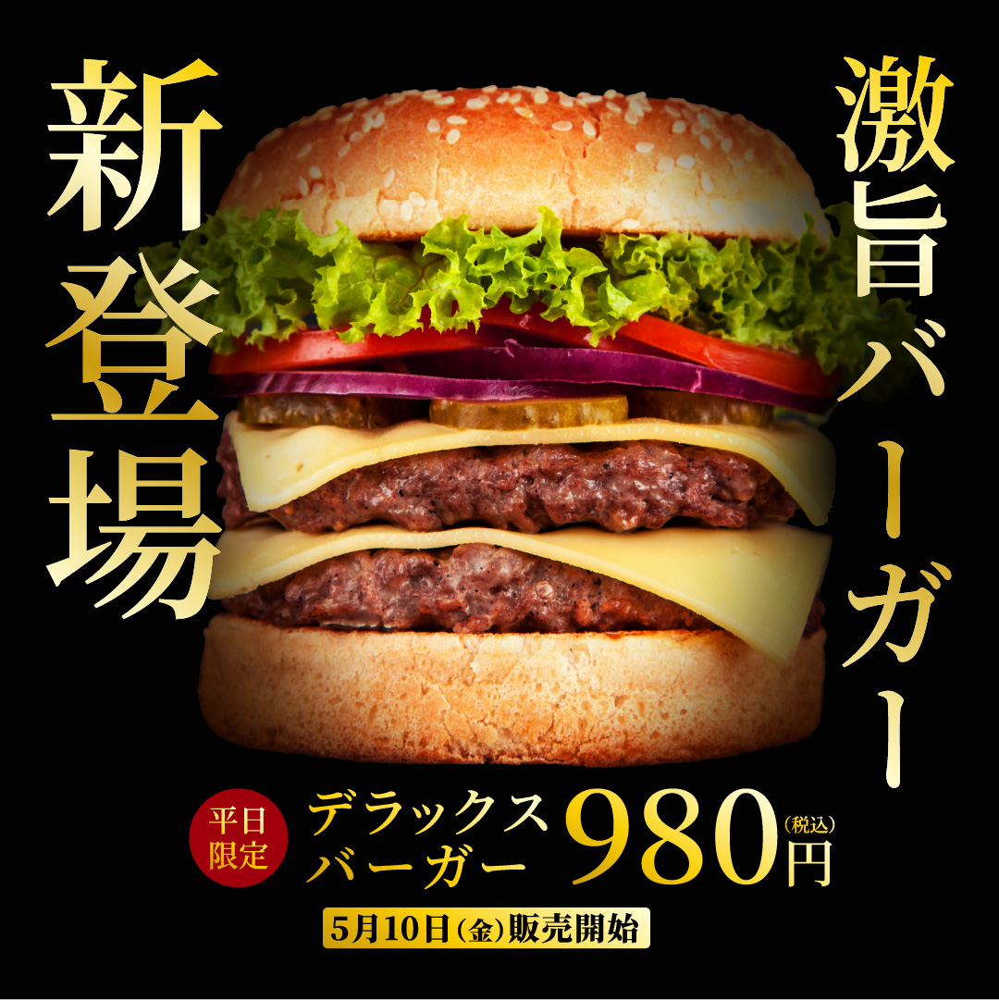
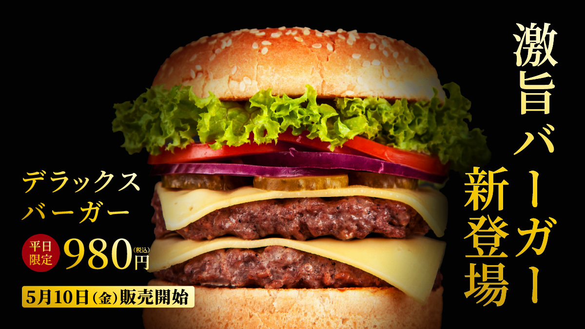

Tanaka Tomoko Portfolio
Works
バナー｜ハンバーガー新商品の告知
高級版（架空）

- 制作年月
- 2026.03
- 担当範囲
- ペルソナ設計 / 構成 / デザイン制作
- 使用ツール
- Illustrator / Photoshop
- 制作期間
- 1週間
新商品の認知拡大を目的としたSNS広告バナーを制作。
A/Bテストを想定し、「高級感」と「POP」の2パターンを制作しました。
Instagram・X掲載用として、正方形と横長サイズを展開しています。
黒背景と金のグラデーション文字で高級感を演出。明朝体で統一、落ち着いた雰囲気に仕上げました。

